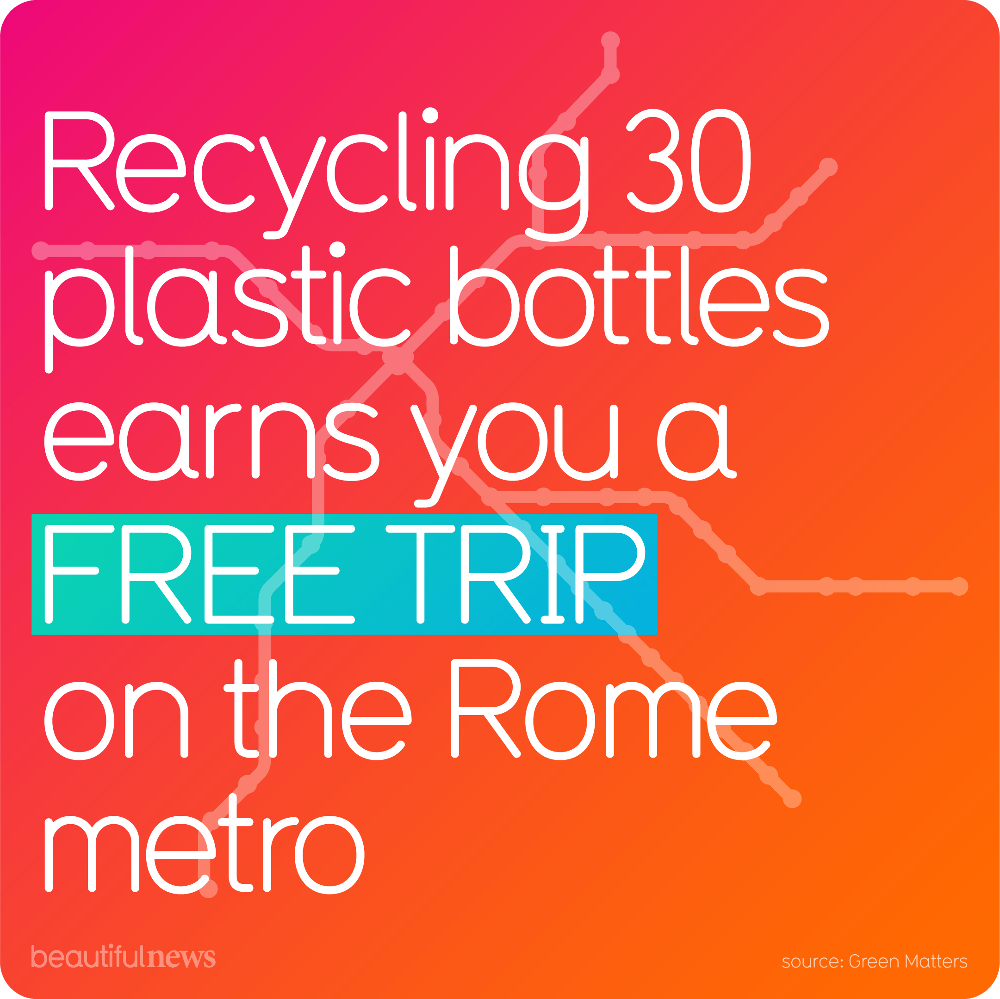

Visualization

Source: Green Matters (referenced by Beautiful News)
Critique
Information Resolution
The Rome recycling visualization is immediately eye-catching. The bright colors and bold emphasis on the words “Free Trip” draw viewers in and quickly communicate the idea that a simple action can lead to a reward. At first glance, the message feels straightforward and optimistic: recycle plastic bottles and receive free transportation. However, the accompanying article reveals that the program is far more limited and experimental than the visualization suggests. According to the article, this initiative, called Ricicli + Viaggi, is a year-long trial being tested at only three metro stations across Rome. Participation also requires access to a smartphone and specific apps, and only certain plastic bottles within specific sizes range are accepted.
These details significantly change how the visualization should be interpreted, however they are completeley absent from the graphic. The visualization does not indicate that the program is temporary, geographically limited, or dependent on digital access. It also fails to address who is most likely to benefit from the program and who may be excluded, such as individuals without smartphones or those who do not regularly travel through the participating stations. While the article acknowledges that reducing plastic consumption is more important than recycling, the visualization focuses solely on the reward-based exchange, leaving viewers with an oversimplified understanding of the initiative’s purpose and impact.
From Tufte's perspective, this gap highlights a lack of information resolution. While the visualization is effective at capturing attention and promoting a positive message, it does not provide enough contextual detail to support informed interpretation. By prioritizing clarity and persuasion over completeness, the graphic limits the viewer’s ability to fully understand the scope, limitations, and sustainability implications of the program.
Effects without Causes
The visualization highlights the desirable outcome that recycling leads to free mobility, but fails to explain whether the program actually reduces plastic waste or reinforces plastic consumption. By rewarding plastic disposal rather than reduction or reuse, the incentive may unintentionally encourage continued reliance on single-use bottles. If a “free trip” becomes a goal, people could be more inclined to buy a bottled drink or collect bottles from elsewhere, increasing waste rather than reducing it. The infographic does not address what happens to the bottles after collection, how they are processed, or whether the system is cost-effective over time. It also ignores the infrastructure required to sustain the program, such as machine maintenance, lifespan, breakdown rates, and the resources needed to manage the collected material.
Based on Tufte’s theory, the image shows an effect (rewarded recycling) while leaving causes and system dynamics unexplained. A more simple and informative version would clarify who the program targets, how it changes behavior, and what evidence supports the claim that the incentive leads to measurable reductions in waste or emissions.
Overreaching
The visualization also overreaches by implying that an individual recycling incentive can serve as a meaningful solution to broader plastic pollution. While the initiative may increase collection of bottles in specific metro stations, the graphic provides no information supporting how this local intervention will have positive environmental outcomes. Plastic pollution is driven heavily by production, packaging systems, consumption patterns, and waste infrastructure. The infographic’s simplicity risks suggesting that the issue can be addressed primarily through individual actions and a clever incentive, rather than through upstream changes and broader policy measures.
Overreaching also appears in the way the graphic assumes broad access. Not everyone has equal access to the machines, to bottled products, or to transit stations where the program operates. If participation requires living near a specific station, commuting by metro, or having time to collect 30 bottles, the program may primarily benefit certain groups while excluding others. Without data on where machines are located or who uses them, the visualization presents a universal solution that may not be universal in practice.
Conclusion
Overall, the Rome recycling visualization is effective at capturing attention and promoting a positive sustainability message, but it ultimately prioritizes persuasion over understanding. While the idea of exchanging plastic bottles for free metro rides is creative and memorable, the graphic leaves out important context that shapes how the program should be interpreted. Key details about scale, access, duration, and actual impact are present in the accompanying article but absent from the graphic. Through Tufte’s perspective, this lack of information resolution, combined with effects presented without clear causes and an overextension of the program’s impact, limits the visualization’s analytical strength. With more contextual data and transparency, the visualization could move beyond a compelling sustainability story and become a more informative tool for evaluating whether this initiative actually addresses plastic pollution.